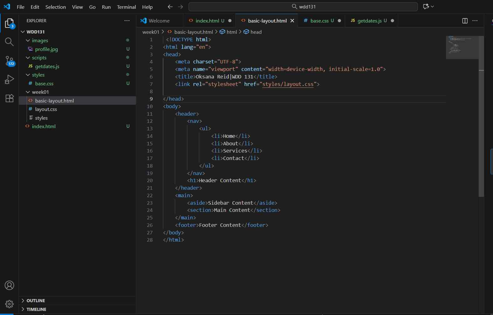

Oksana Reid
About Me

My name is Oksana Reid, a dedicated learner with a passion for web development. My journey in WDD 131 has introduced me to HTML, CSS, and JavaScript, allowing me to build dynamic and visually appealing web pages. I enjoy experimenting with new technologies, improving my coding skills, and creating projects that combine both functionality and design. Learning to problem-solve and think creatively through code has been a rewarding part of my growth as a web developer..
My Projects
I’m currently working on several web development projects that showcase my growing skills in HTML, CSS, and JavaScript. One project includes building a fully responsive course landing page, while another focuses on creating interactive web applications using dynamic JavaScript features. I’m proud of these projects because they reflect my ability to combine design and functionality, and they demonstrate my commitment to continuous learning and improvement in web development..